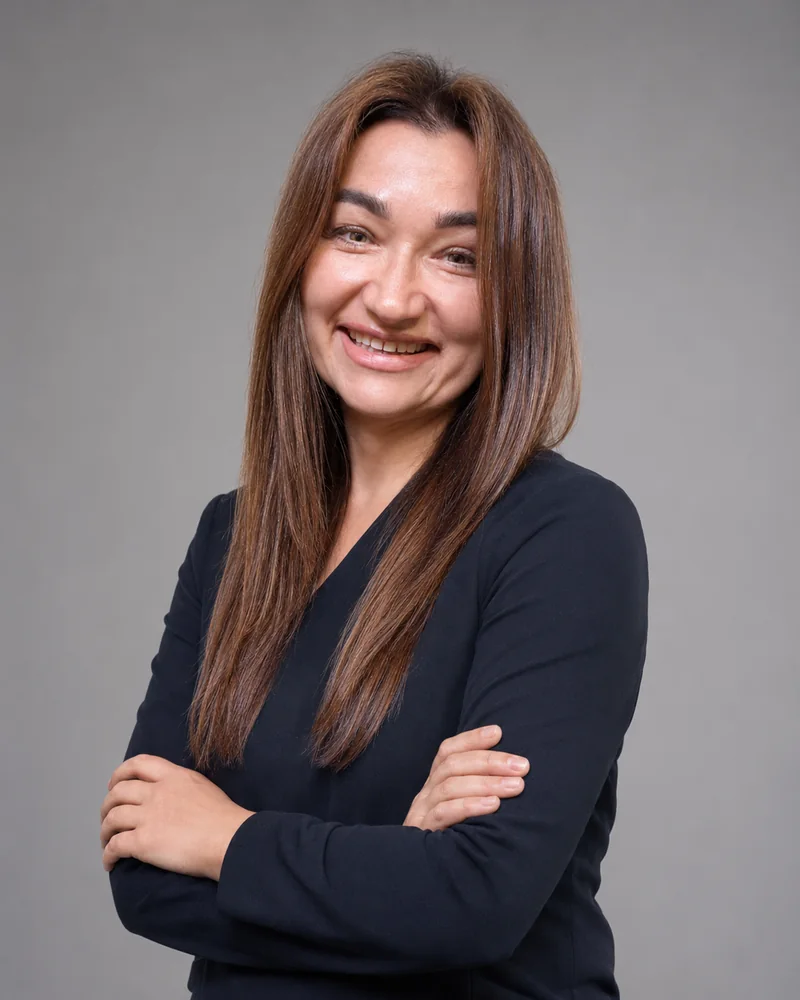
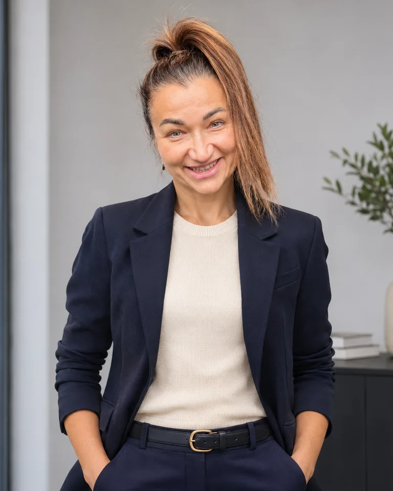
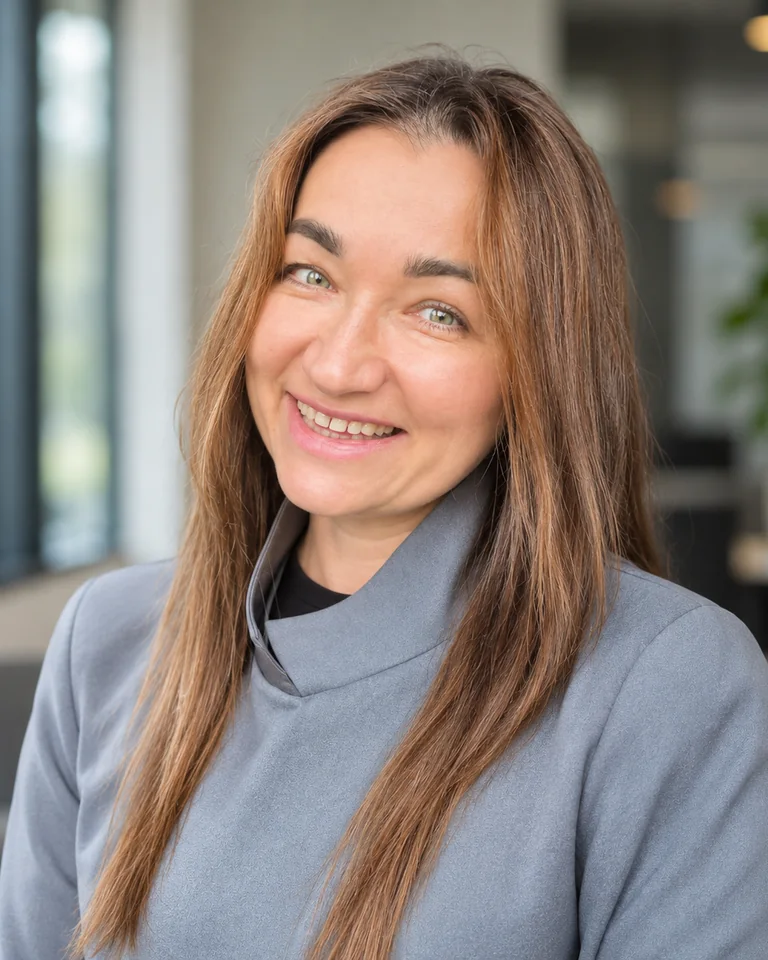

Надіслала 30, 50 резюме – і тиша?
Справа може бути не в твоєму досвіді, а в тому, як він представлений у CV.
Аудит CV · 45 хв у Zoom · €18
Замовити аудит CVПисьмові рекомендації за 24–48 годин · оплата в гривнях за курсом

Ірина Луценко · кар'єрна консультантка
працюючих біженок і біженців з України працюють нижче своєї кваліфікації
Джерело: UNHCR
Роботу за своїм рівнем, а не «будь-яку»
Склад, прибирання, кухня «поки що», яке тягнеться роками. Часто досвід є, але новий роботодавець не знає українських компаній, посад і професійного контексту. Він оцінює лише те, що бачить у твоєму CV.
Твій досвід не зникає після переїзду. Його треба правильно показати.
Знайомо?

Я: 10 років досвіду в Україні.
Також я: подаюся на вакансію «без досвіду», бо раптом візьмуть 🙃
Аудит для тебе, якщо…
- Надсилаєш CV, але не отримуєш відповідей
- Маєш досвід в Україні, але не знаєш, як представити його на ринку іншої країни
- Працюєш нижче своєї кваліфікації і хочеш повернутися до фаху
- Повертаєшся до роботи після перерви або плануєш змінити сферу
Можна прийти з CV українською або іноземною мовою – навіть якщо переїзд тільки плануєш. Важливо знати країну й посаду, на які орієнтуєшся.
Що ти отримаєш
- 01Розбір CVЩо працює, що заважає і чого не бачить роботодавець.
- 02Адаптація під країну та вакансіюЯк представити твій досвід, компетенції та результати.
- 03Слабкі місця та сильні сторониСтруктура, профіль, ключові слова, «незручні» моменти й досвід, який варто підсвітити.
- 04Топ-5 пріоритетних змінПисьмовий план того, що виправити першочергово, – за 24–48 годин після зустрічі.
Три думки, які тримають нижче твого рівня
- «Переїхала – значить, тепер я junior»Переїзд не обнуляє досвід. Часто роботодавець просто не бачить твого рівня, бо в CV видно лише назву посади й список обов'язків.
- «Переклала CV – тепер воно міжнародне»Переклад змінює мову. Адаптація пояснює твій досвід у контексті країни, посади й вакансії.
- «Мій український досвід тут нікому не потрібен»Управління, переговори, процеси, робота з клієнтами переносяться між країнами. Їх треба показати мовою нового ринку.
Як проходить аудит
- Оплата і анкетаНадсилаєш CV, країну, посаду, мову подачі і, бажано, одну вакансію.
- Попередній аналізЧитаю твоє CV поруч із вакансією – так, як його читатиме роботодавець.
- Zoom до 45 хвилинРозбираємо сильні сторони, слабкі місця і подачу досвіду.
- Письмовий планЗа 24–48 годин – рекомендації і топ-5 змін, з яких почати.

Хто проводить аудит
Ірина Луценко
Я кар'єрна консультантка. Маю досвід участі в наймі й оцінюванні CV, тому дивлюся на резюме не лише очима кандидатки, а й з боку роботодавця.
- Пройшла міжнародний відбір Erasmus for Young Entrepreneurs і 7 місяців стажувалася на Тенерифе
- Працюю віддалено з міжнародними партнерами
- Кілька разів змінювала сферу – і жодного разу не починала з нуля
Моя задача – допомогти тобі побачити, як твій досвід може працювати на новому ринку.
CEO Womafreesm · директорка з розвитку Hope – Children of Ukraine · засновниця Ukrainian for You
Історії жінок, з якими я працювала
Кілька прикладів запитів і результатів спільної роботи.
Наталія · фітнес-тренерка · Норвегія
Наталія була впевнена: без норвезької шансів немає.
Сьогодні вона проходить оплачуване стажування в одному з найкращих тренажерних залів Норвегії 🇳🇴
Іноді справа не лише в мові. А в тому, як ти показуєш свій досвід і презентуєш себе роботодавцю.
Шукаєш роботу і не знаєш, з чого почати?
Замовити аудит CV Ліля, 45
Ліля, 45Не розуміла, як пояснити свій професійний шлях новому роботодавцю.
Результат роботиВизначили напрям і сформулювали, що саме вона може запропонувати роботодавцю.
 Оксана, 53
Оксана, 5320 років у різних ролях. На співбесідах її сприймали як виконавицю, хоча вона прагнула керівної ролі.
Результат роботиСформували чітку професійну історію, де різноплановість стала перевагою, і напрям подальшого пошуку.
 Таня, 41
Таня, 41Досвід у кількох напрямах, але не виходило зібрати його в одну зрозумілу історію.
Результат роботиВизначили пріоритетний напрям і наступні кроки.

Аудит CV для роботи за кордоном
Ти не починаєш з нуля. Ти починаєш із досвіду.
Зрозумій, що саме варто змінити, перш ніж надсилати наступні резюме.
Входить
- Розбір CV під країну й посаду
- Zoom до 45 хвилин
- Письмовий план і топ-5 змін
Не входить
- Переписування й переклад CV
- Пошук вакансій і подання заявок
- Гарантія запрошень
оплата в гривнях за поточним курсом
Після оплати обираєш зручний час і надсилаєш CV та анкету.
Питання та відповіді
У мене CV лише українською. Підійде?
Так. Аудит підійде і тим, хто вже має резюме іноземною мовою, і тим, хто поки має лише українську версію.
Для якої країни?
Для будь-якої, де ти шукаєш роботу. Аудит будується від твоєї країни, посади й вакансії – єдиного стандарту CV для всіх країн не існує.
Ти перепишеш або перекладеш моє CV?
Ні. Аудит – це аналіз і письмові рекомендації: що змінити і з чого почати. Переписування, переклад і дизайн не входять.
Зараз я працюю на складі чи в сервісі. Писати це в CV?
Розберемо на аудиті. Тимчасову роботу нижче кваліфікації можна подати як адаптивність, а не провал – як саме, залежить від країни й посади. Так само працюємо з перервою в роботі.
Чи гарантує аудит запрошення на співбесіди?
Ні. Рішення ухвалює роботодавець. Але ми працюємо з тим, що залежить від тебе: як твій досвід видно з CV і наскільки він відповідає вакансії.
Допоможеш із дозволом на роботу чи визнанням диплома?
Ні, це не юридична й не міграційна консультація. Питання дозволів, визнання кваліфікації та ліцензування професії перевіряй в офіційних джерелах своєї країни.